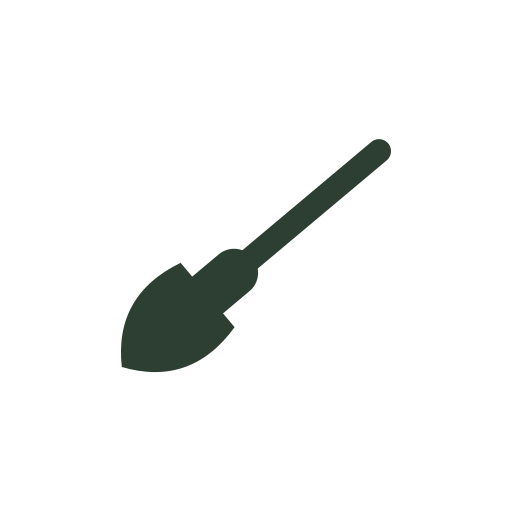
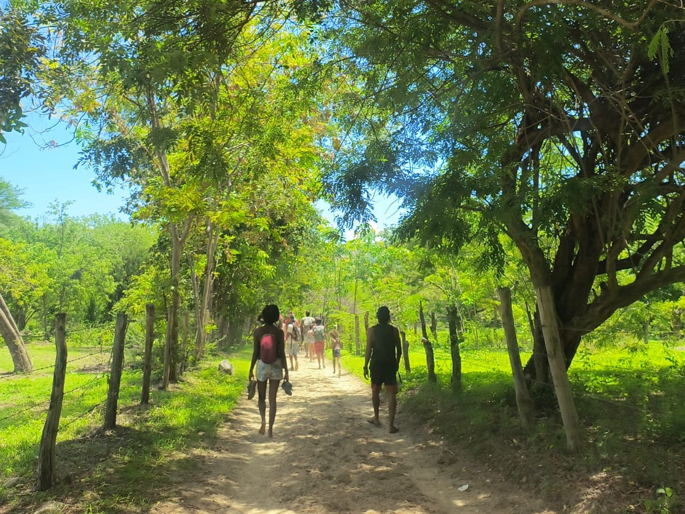
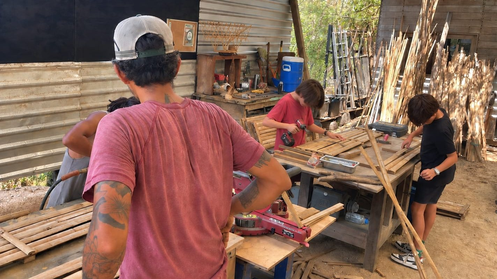

The garden
The cycles of the land, food sovereignty and respect for the Zapotal ecosystem. Nature as the first classroom.
Educational project
In this first school year we will open the first and second grades of secondary school, with bilingual, multi-level teaching. At this stage, the learning process nurtures the emerging individuality, the capacity for observation and analytical thinking.

Workshops


The cycles of the land, food sovereignty and respect for the Zapotal ecosystem. Nature as the first classroom.
Building with local materials: applied geometry, patience and the creation of useful objects for the community.
Rhythm, voice, drawing and color. Artistic expression as a way of knowing the world and knowing oneself.
Turning an idea into a real project: planning, creating and bringing the fruit of one's own work to the community.
Pedagogy
Garden, bamboo carpentry, music and arts, and young entrepreneurs. Manual action as a door to the world.
The emotional connection with what is learned and with the community that sustains the process.
Intellectual clarity and independent judgment: assessments, projects and a learning journal.
The first year marks the beginning of a new way of inhabiting the school space. Students move from childhood into early adolescence with clear guidance that balances freedom with the basic structure needed for development.
Academic leveling is fostered through artistic and hands-on projects that awaken a genuine interest in knowledge, building a solid bond with peers and teachers.
In second grade, the knowledge acquired begins to crystallize through active experimentation. Young people take on greater responsibility for managing their own projects, developing guided autonomy towards solving real problems.
Analytical thinking is integrated with craft practice, allowing the depth of academic topics to be reflected in tangible, functional works that benefit the immediate environment.
Subjects
Mathematics, science, humanities and art are the foundation of the school year. The workshops and projects are built on them: what is made with the hands always has content behind it that is studied.
Reasoning and problem solving, with challenges tailored to each student.
Observation, experimentation and analytical thinking in contact with the environment.
History, language and understanding of the world to form one's own judgment.
Expression, rhythm, creativity and the body as an inseparable part of whole-person learning.
“Our highest endeavor must be to develop free human beings who are able of themselves to impart purpose and direction to their lives.”— R. Steiner
Our pedagogy is active and experiential. Students take part in real projects — the garden, bamboo carpentry, the arts, the young entrepreneurs workshop — and carry out community service in the way they themselves choose: with the land, with people or with animals, individually or in groups.
Caring for the space and deciding on their community service is part of the learning: real autonomy, with real support.